IPTVUS24 · Photoreal cinema
More tangible.
More dimensional.
Original photographic-style interiors and hardware. Finer metal bezels, glass reflections, grounded shadows, and a more convincing layered composition. Both day and night atmospheres retained.
Photorealistic, not documentary.
All new images are original AI-generated illustrations, not real installations or supplied-product photos. No film stills, branded broadcasts, sample reviews, or new marketing claims. Business copy and pricing are unchanged.
01 — A photographic hero with physical depth

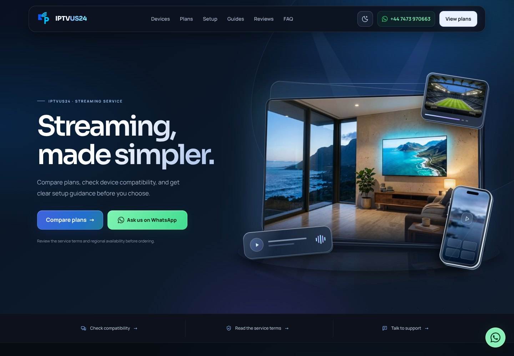

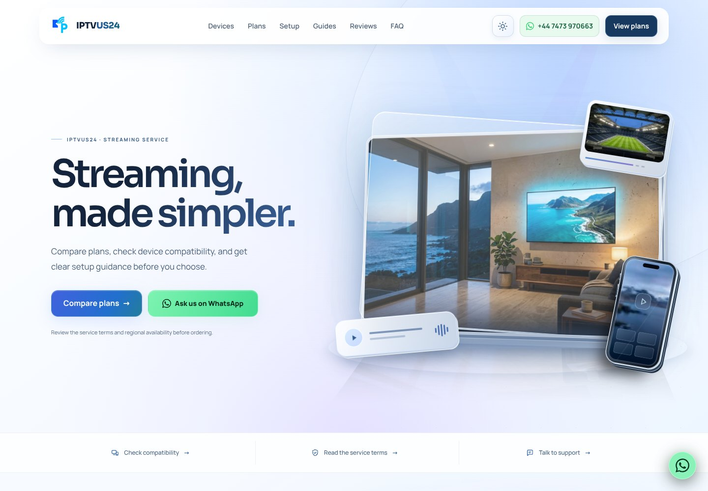
Previous hero for comparison


02 — Close-up on mobile materials

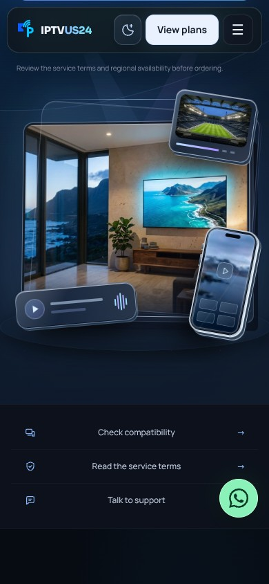

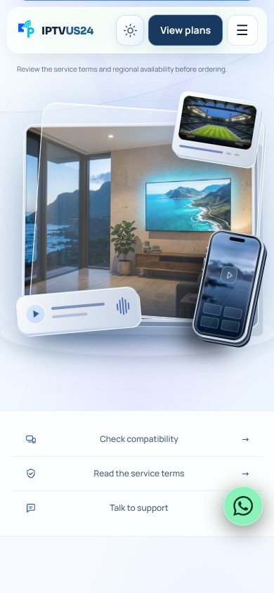
03 — Glass, metal, landscape

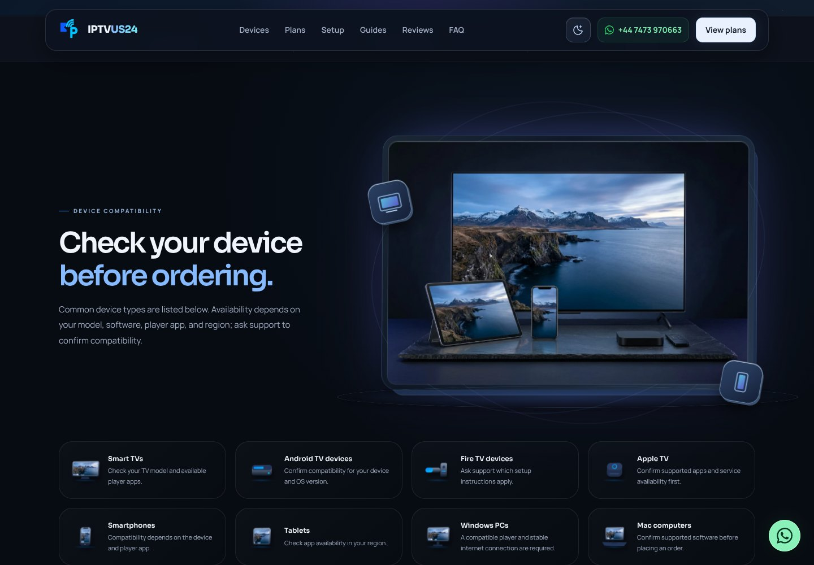

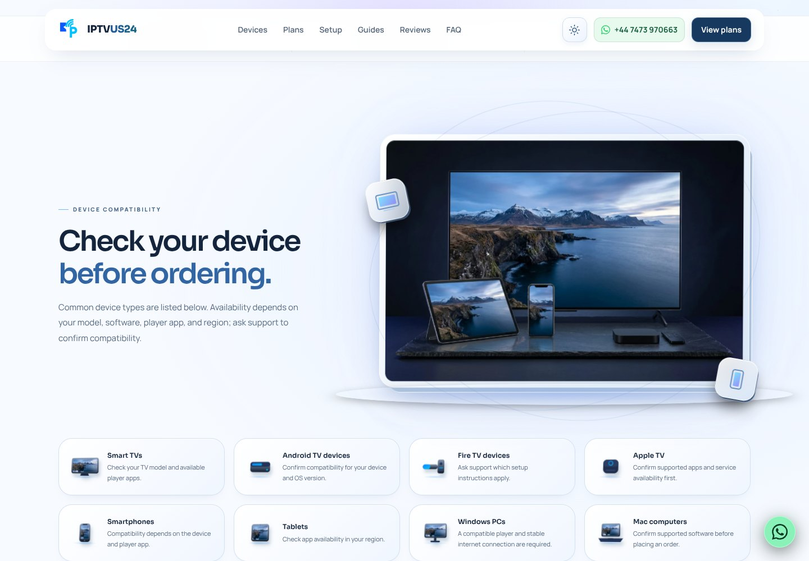
Mobile: day and night

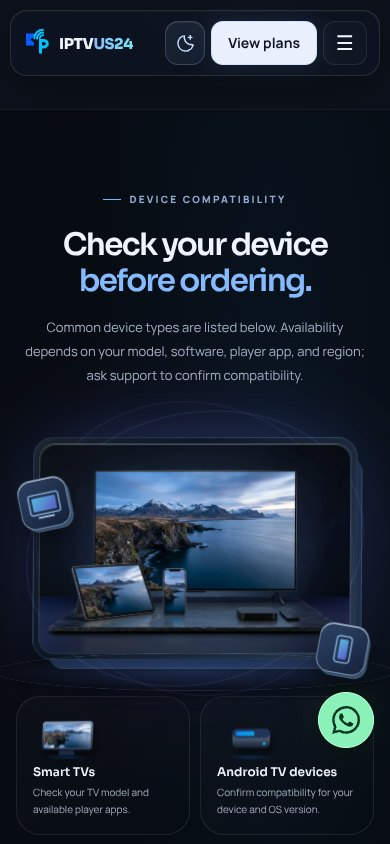

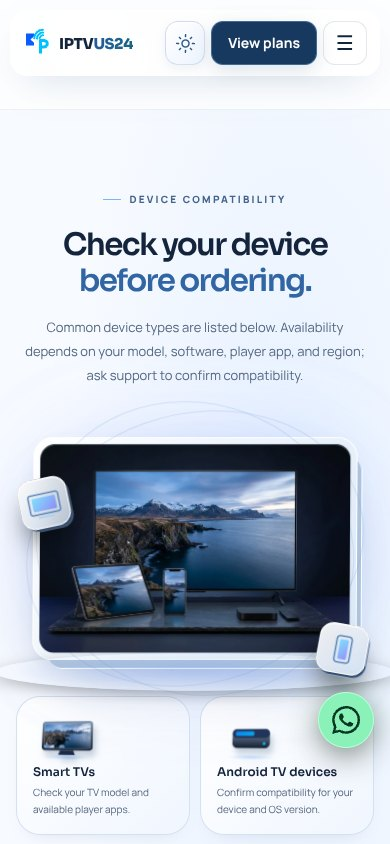
04 — Warmer rooms. Elevated pricing.

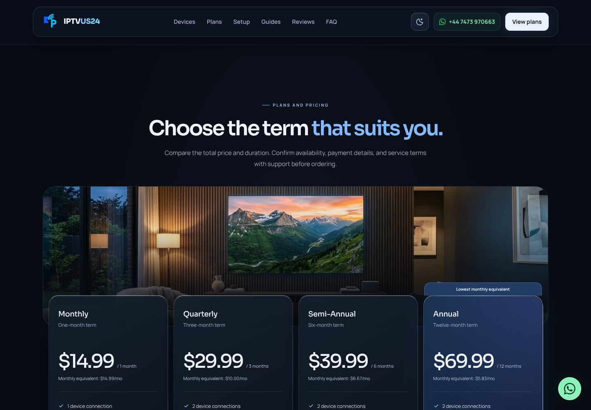

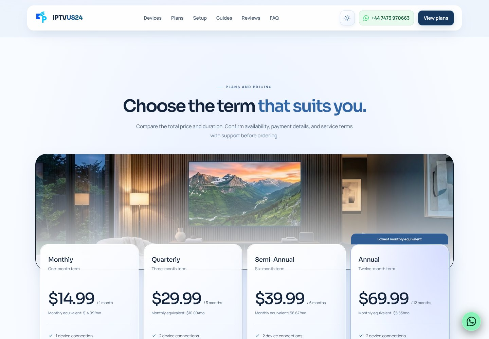
Mobile: day and night

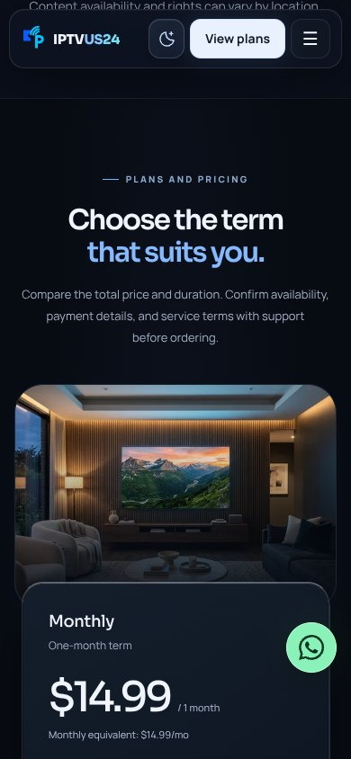

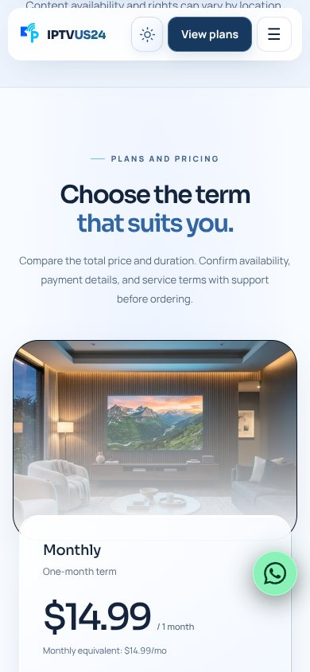
05 — A real-feeling venue, honest review states

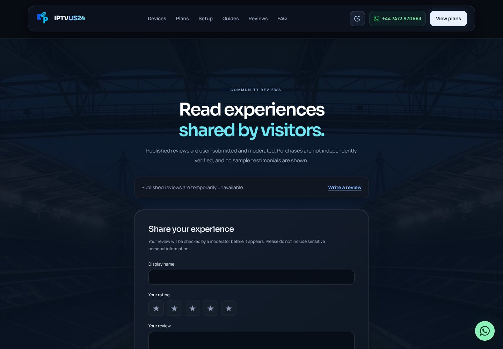


06 — A cinematic finish


Production verification
Lint · Strict TypeScript · 39 existing tests · 50-route production build
Responsive checks at 320–1920px · No axe violations in four scanned homepage states
Fine-pointer tilt and floating transforms verified · Reduced-motion fallback verified
Theme persistence, keyboard switching, menu focus return and FAQ toggle verified
Responsive checks at 320–1920px · No axe violations in four scanned homepage states
Fine-pointer tilt and floating transforms verified · Reduced-motion fallback verified
Theme persistence, keyboard switching, menu focus return and FAQ toggle verified